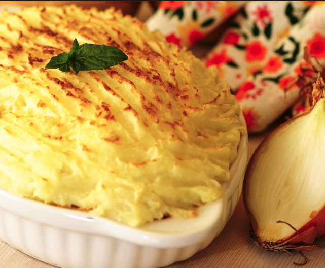

Vegetarian Shepherd's Pie

Description
A mix of vegetables cooked in soy sauce with a potato, soured cream, and cheese topping.
Ingredients
- 1 onion (chopped)
- 1 red pepper (chopped)
- 2 celery sticks (sliced)
- 2 carrots (chopped)
- 1 courgette (sliced)
- Broccoli (chopped into sprigs)
- 1 small pot of sour cream 3 oz cheddar cheese (grated)
- Soy sauce (a good shake)
- ½ teaspoon chilli flakes
- Potatoes for topping Parmesan or cheddar (grated)
Steps
- Fry onion and red pepper gently till soft
- Meanwhile cook chopped carrot and celery in a saucepan with a little stock. Put lid on and simmer till not hard. Add broccoli sprigs and courgettes at end and cook till tender but not soggy.
- Add chilli flakes and soy sauce to onion and pepper mix and when absorbed add the carrots, celery, courgette and broccoli and stir together.
- Put veg in an ovenproof dish and top with grated cheese followed by sour cream – spread over in dollops.
- Top with mashed potato and grate a bit of parmesan/cheddar cheese on top.
- Put in oven and cook at Gas 175 till topping is brown and veg bubbling a bit.